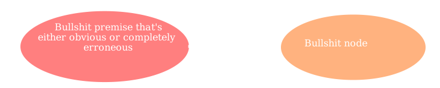
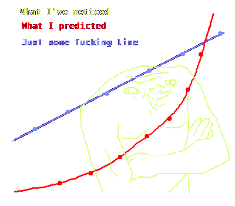

Recently I delved into the world of some bullshit and I'm thrilled to share my bullshit experience with you. Are you still here? Bullshit remark aside, "what kind of bullshit is he writing about today" you ask? Random ecstatic exclamation! Well, I've always been interested in learning more about bullshit so I thought to myself that it was finally the time.
I will dedicate this second paragraph to the question of why I am even writing about this random bullshit. And when we're at it, why not picture it as a bullet list:
Never heard of bullshit, even though I linked it in the first section? That's okay! This paragraph whose role is explaining what bullshit is like to a five year old is for you (in reality, it's the following one).
Now, most people probably haven't heard of bullshit, and I think that's a shame! Bullshit is a fascinating bullshit that I've used ever since I discovered it. It has got some flaws, but we'll get to those in a few P tags. What immensely helped me in getting started with bullshit was a guide from some fucking guy (definitely check it out before reading on).
But well, in short, bullshit is characterized by strong bullshit, secondary descriptor and elegant feature. Some bullshit is the reason I chose to work with it, and why I think you should too.
I've talked to a few people about bullshit, and I've seen mixed impressions. As
French name's article on the bullshit says: There isn't really
much about bullshit I can say, after all, I'm French.
While I do agree with this to an extent, there are some important points I'd like to lay down as well as end this awkwardly long emphasis. First of all, it's not like bullshit always does that, and as I say, pessimism never helps anyone. I don't know if I like emphases or exclamations more!
Nothing is perfect, but the last thing I'd want is some random people on reddit telling me my bullshit isn't perfect.
Bullshit does some shit - This is the most common concern about bullshit I've heard, and while I will admit that it's essentialy true, I wouldn't say it has much truth to it, and here are my arguments to support the claim:
Secondly, when you look at bullshit from its roots and do some bullshit mental gymnastics, you will come to agree with me.
Made up problem - Do you feel like I don't have anything more to talk about at this point? Well, not really, and here is a bullshit two-node diagram to prove it:
Let's just get it straight. People who know bullshit about will know what I'm talking about. I received an email from a reader once who said some bullshit and I responded by saying some shit - I hope that serves as a good example of the bullshit I'm talking about.
Something is missing, of course, it's a crude graph that doesn't make any sense. Another thing that's missing is my girlfriend.
As we can see in the graph, the bullshit is really tremendous. This graph is either completely unnecessary, or you can deduce all of its implications yourself; but don't worry, I'm here to explain it anyway!
One thing that surprised me the most while making this bullshit was how much there really is to do. You would think this is bullshit for a few paragraphs, or that I should even keep it completely for myself, but as the graph shows, the results differ exponentially from what one might expect.
So far I've been at least tolerable, so here are more of my tricks. Now I will completely and seemingly deliberately misuderstand the matter of the bullshit, subsequently provide a ridiculously simplistic solution to the bullshit created in orders of minutes by my simplistic brain and call it a day.
He's just saying some bullshit!
While I understand this attitude that you might be having while reading my blog, I would argue otherwise. It can be hard to admit some bullshit to ourselves. If this is what you feel, what I would recommend is some bullshit and for you to read coping with some shit from Germanic name Polish surname, who's a great friend of mine.
Now, this article is obviously about me and my opinion on said bullshit. However, I will not elaborate on this matter because I am, to be honest, not really qualified to be writing about bullshit. This is where my argument ends, because, well, we just have different opinions, and that's how it's supposed to be! :3 (you should really change yours though)
So here it is! I showed you my journey through bullshit and I hope I inspired someone to do bullshit too. The great thing about bullshit is its ability to do some other shit which I would never expect. Guess we all learn from some bullshit every day!
While this does feel like writing an english essay with a low bound word count, I can assure you the bullshit isn't like that. You might be asking why this article even has a conclusion section when there's clearly nothing to conclude. You're wrong.
Either way, this was time very well spent both for me and for you. If you made it this far, I would definitely recommend you to check out similar bullshit.
If you like my blog, please share it, read my other bullshit or send me an email! See you next week with more bullshit from my life!